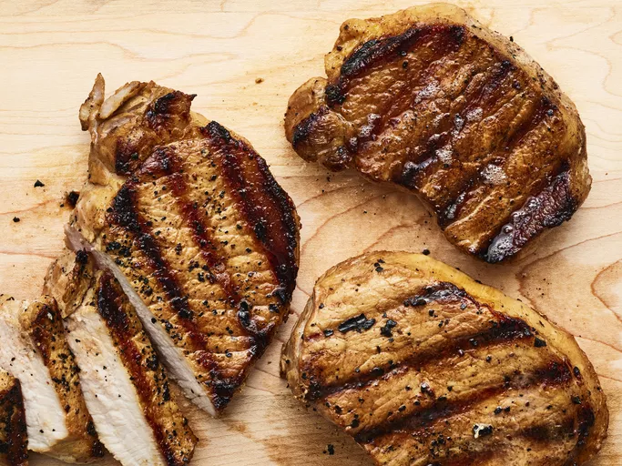

Best Grilled Pork Chops

Description
This top-rated grilled pork chop recipe results in tender, juicy, and incredibly flavorful meat every time.
Ingredients
- ½ cup water
- ⅓ cup light soy sauce
- ¼ cup vegetable oil
- 3 tablespoons lemon pepper seasoning
- 2 teaspoons minced garlic
- 6 boneless pork loin chops, trimmed of fat
Steps
- Mix water, soy sauce, vegetable oil, lemon-pepper seasoning, and garlic in a deep bowl; add pork chops and toss to coat. Marinate in the refrigerator for at least 2 hours.
- Preheat an outdoor grill for medium-high heat and lightly oil the grate.
- Remove pork chops from the marinade and shake off excess; discard the remaining marinade.
- Cook the pork chops on the preheated grill until no longer pink in the center, 5 to 6 minutes per side. An instant-read thermometer inserted into the center should read 145 degrees F (63 degrees C).
- Serve hot and enjoy!
Home